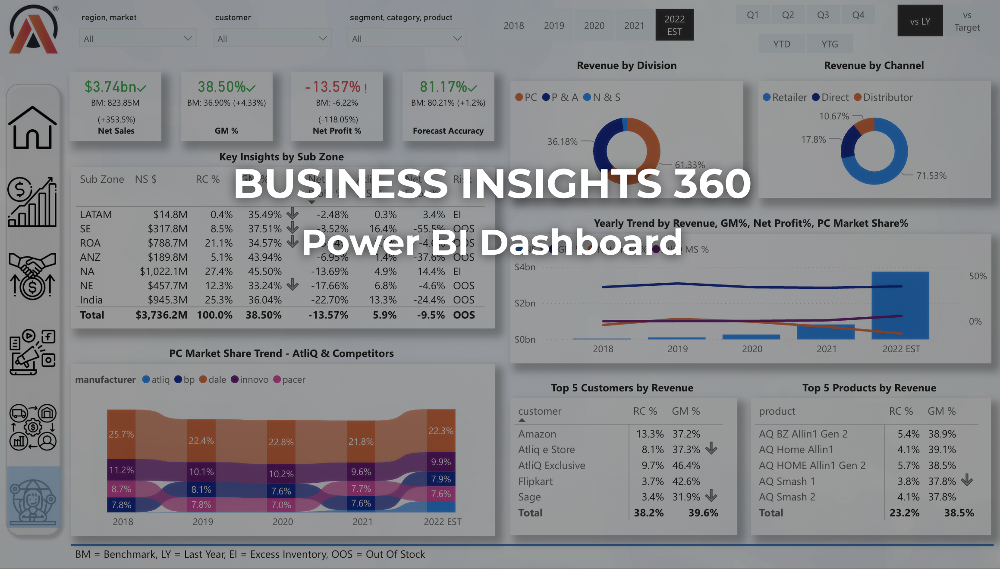

Business Insights 360 (Power BI)
Designed and developed an end-to-end Power BI business intelligence solution delivering a 360° view of organisational performance across Finance, Sales, Marketing, and Supply Chain.
Built a scalable data model and KPI layer to analyse revenue, profitability, customer performance, and forecast accuracy, enabling stakeholders to make data-driven decisions across business functions.

Power BI · DAX · Data Modelling · Business Intelligence · Data Analysis

Home View: Central navigation hub providing an overview of business performance across all functions.

Finance View: Profit & Loss analysis, revenue trends, and cost breakdown.

Sales View: Customer and product performance with profitability insights.

Marketing View: Segment-level performance analysis, revenue contribution, and growth opportunities.

Supply Chain View: Forecast accuracy, net error trends, and inventory risk monitoring.

Executive View: High-level KPIs summarising overall business performance for decision-makers.
Developed a comprehensive analytics solution to evaluate business performance across multiple domains using Power BI.
The project integrates structured data modelling, KPI design, and interactive dashboards to provide actionable insights for decision-makers.
- Objective: Provide a unified view of business performance across departments.
- Approach: Data modelling → KPI creation → dashboard design → insight generation.
- Outcome: Improved visibility into revenue drivers, cost structure, and operational performance.
Designed a star schema data model with clearly defined fact and dimension tables to ensure scalability and efficient querying.
Implemented relationships, calculated measures (DAX), and transformations using Power Query to build a robust analytical data layer.
- Schema: Fact tables (Sales, Forecast) with dimension tables (Customer, Product, Region, Date).
- Transformations: Data cleaning, shaping, and enrichment using Power Query.
- Measures: Custom DAX measures for KPI calculations and dynamic analysis.
- Net Sales: Revenue performance across time and regions.
- Gross Margin %: Profitability efficiency across products and segments.
- Net Profit %: Overall business profitability.
- Forecast Accuracy: Comparison between actual vs predicted demand.
- Customer & Product Performance: Top/bottom contributors to revenue and profit.
The analysis revealed key patterns in revenue distribution, cost structure, and operational efficiency across business units.
- Identified high-revenue customers contributing disproportionately to overall sales.
- Detected declining profitability in specific product categories despite stable sales.
- Highlighted forecast inaccuracies leading to inventory risks in supply chain operations.
- Revealed regional performance variations affecting overall business growth.
- Tool: Microsoft Power BI
- Data Processing: Power Query (ETL, transformation, cleaning)
- Data Modelling: Star schema design with relationships
- DAX: Custom measures for KPIs, time intelligence, and dynamic filtering
- Visualisation: Interactive dashboards with slicers, drill-downs, and cross-filtering
This dashboard enables stakeholders to monitor performance in real time, identify inefficiencies, and make informed strategic decisions.
The solution demonstrates how structured data modelling and BI tools can transform raw data into actionable business insights.